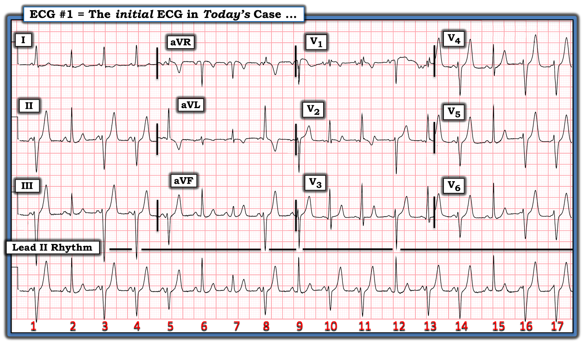
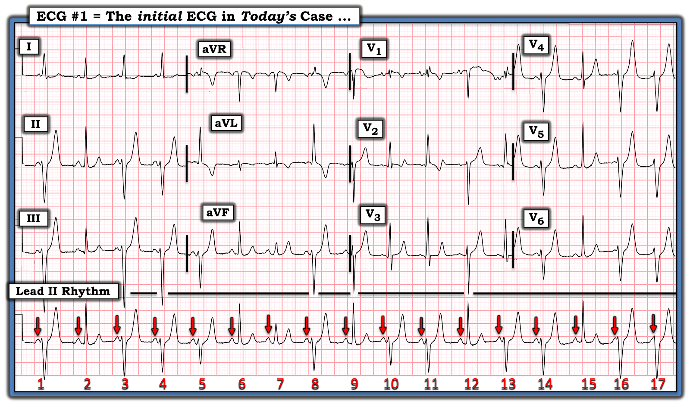
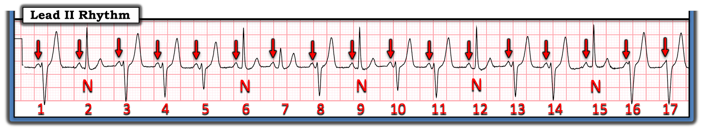
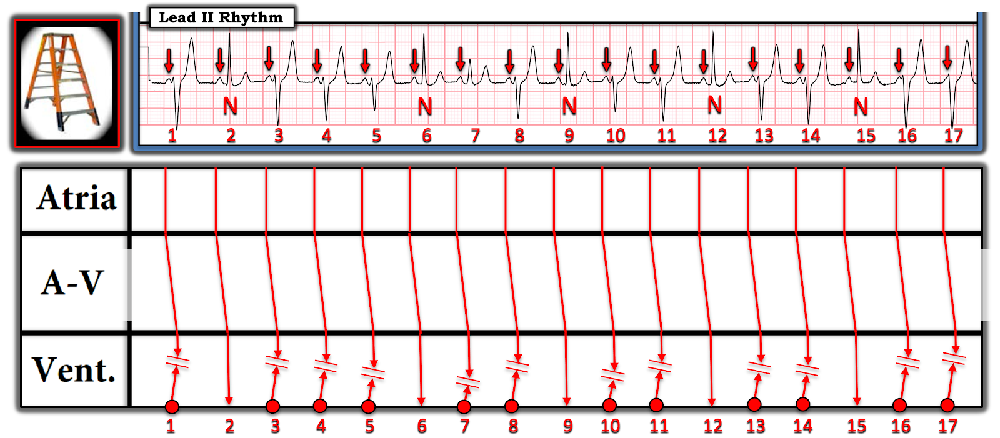
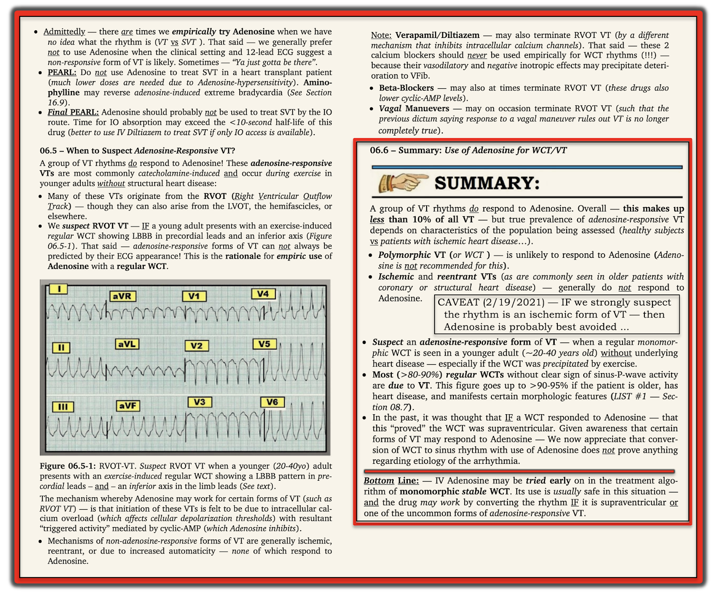

ECG Blog #393 — Sao lại nhiều hình dạng đến thế?
Nhịp thú vị trình bày ở Hình 1 được ghi sau khi tiêm Adenosine để điều trị một cơn SVT (nhịp nhanh trên thất — SupraVentricular Tachycardia) đều.
- BẠN sẽ đọc nhịp ở Hình 1 như thế nào?
- Tại sao phức bộ QRS trên dải nhịp chuyển đạo II dài lại có nhiều hình dạng đến vậy ?


SUY NGHĨ CỦA TÔI về điện tâm đồ ở Hình 1:
Đúng như tiêu đề bài Blog hôm nay — có rất nhiều biến đổi về hình dạng của phức bộ QRS qua 17 nhát bóp thấy trên dải nhịp chuyển đạo II dài. Chẳng phải điều này khiến ta khó biết nên bắt đầu đọc từ đâu sao?
- ĐIỂM THEN CHỐT #1: Bước khởi đầu dễ nhất để xác định nguyên nhân của một nhịp phức tạp như nhịp ở Hình 1 — là đánh dấu các sóng P.
- Bạn sẽ để ý rằng tôi cũng đánh số các nhát bóp — vì việc này ngay lập tức giúp mọi người cùng bảo đảm rằng tất cả chúng ta đang nói về cùng một phần của bản ghi.
- Dùng compa đo (calipers) là cách nhanh nhất (và chính xác nhất) để xác định XEM nhịp nhĩ nền có đều hay không.
- LƯU Ý: Khoảng P-P có thể thay đổi nhẹ nếu có loạn nhịp xoang — nhưng ngay cả khi đó, thường vẫn dễ thấy LIỆU "chủ đề" của khoảng P-P có phải là của một nhịp xoang nền hay không.
ĐIỂM THEN CHỐT #2: Khi nhịp phức tạp — Hãy tìm những nhát "bình thường".
- Tôi đã đánh dấu các sóng P trong nhịp hôm nay bằng các mũi tên ĐỎ ở Hình 2. BẠN có xác định được những sóng P xoang khá đều nào dường như dẫn truyền bình thường xuống thất không?


Những sóng P nào ở Hình 2 được dẫn truyền bình thường?
Đôi khi bắt đầu bằng việc xác định những sóng P nào không được dẫn truyền bình thường xuống (và xuyên qua) tâm thất lại dễ hơn.
- Khoảng PR đứng trước nhát #1 ở Hình 3 — rõ ràng quá ngắn để xung truyền bình thường qua toàn bộ hệ thống dẫn truyền trong thất.
- Tương tự — khoảng PR đứng trước các nhát #3, 4 và 5 dường như quá ngắn để dẫn truyền bình thường.
- Mặt khác — khoảng PR trước nhát #6 đủ dài, ~0.14 giây, để dẫn truyền bình thường.
- Tiếp tục — các khoảng PR trước các nhát #8,10,11,13,14,16 và 17 đều quá ngắn (tức là <0.11 giây) để xung truyền trọn vẹn qua toàn bộ hệ thống dẫn truyền trong thất.
- Điểm MẤU CHỐT: Tôi đặt chữ "N" (viết tắt của dẫn truyền "Normal" — bình thường) bên dưới các nhát #2,6,9,12 và 15 — vì các nhát này đều trông giống nhau, và đều có cùng một khoảng PR bình thường đi trước.
- Lý do tôi không nghĩ rằng nhát #7 được truyền qua toàn bộ hệ thống dẫn truyền trong thất — là hình dạng khác biệt của phức bộ QRS này so với các nhát #2,6,8,12 và 15. Thay vào đó — nhát #7 dường như là một nhát hỗn hợp, với hình dạng QRS và sóng T trung gian giữa nhát xoang dẫn truyền bình thường #6 — và nhát chủ yếu có nguồn gốc thất #8.


ĐIỂM THEN CHỐT #3: Như đã bàn và minh họa trong ECG Blog #128 — Khi một xung trên thất và một xung thất xuất hiện gần như đồng thời, kết quả có thể là một nhát hỗn hợp (fusion beat).
- Khi xảy ra hiện tượng hỗn hợp, các mặt sóng khử cực từ phía trên và từ phía dưới gặp nhau trong tâm thất trước khi một trong hai xung kịp hoàn tất đường đi của mình. Hình dạng của phức bộ QRS tạo thành mang đặc điểm của cả phức bộ trên thất lẫn phức bộ thất.
Khái niệm nhát hỗn hợp, xét trong bản ghi hôm nay, được giải thích rõ nhất bằng một Giản đồ bậc thang (laddergram), mà tôi đã vẽ ở Hình 4.
- Như được thể hiện bằng 5 chữ "N" tôi đã thêm ở Hình 4 bên dưới các nhát #2,6,9,12 và 15 — 5 nhát này dường như được truyền bình thường qua toàn bộ hệ thống dẫn truyền trong thất.
- Các mức độ hỗn hợp khác nhau thấy ở 12 nhát còn lại trong bản ghi hôm nay.
- Ở Hình 4, tôi gợi ý theo sơ đồ rằng mặt sóng xoang và mặt sóng thất của nhát #7 gặp nhau tại một điểm thấp hơn trong Tầng Thất của giản đồ bậc thang — vì khoảng PR gần như bình thường và hình dạng QRS trông giống 5 nhát xoang dẫn truyền bình thường hơn là giống bất kỳ nhát nào trong 11 nhát hỗn hợp còn lại (tức là sóng P xoang có thêm một chút thời gian để đi qua tâm thất — và do đó giống hình dạng QRS của các nhát xoang dẫn truyền bình thường hơn).
- Ngược lại — tôi vẽ "điểm gặp nhau" của các mặt sóng đối với những nhát trông bất thường nhất ( = các nhát #1,3,16,17) ở vị trí tương đối cao hơn trong Tầng Thất, vì các nhát này (vốn có khoảng PR đi trước ngắn hơn) đi được xa hơn trong tâm thất, và do đó mang nhiều đặc điểm của các nhát thất đơn thuần hơn.


ĐIỂM CUỐI CÙNG: Các nhát thất xuất phát từ đâu?
Hãy quay lại một chút với điện tâm đồ 12 chuyển đạo ở Hình 2. Lưu ý rằng mặc dù các nhát #1; 3,4,5; 8; 10,11; 13,14; và 16,17 rộng hơn 5 nhát xoang dẫn truyền bình thường — chúng vẫn chưa hẳn đạt thời gian 0.12 giây.
- Các nhát dẫn truyền bất thường #10 và 11 biểu hiện phức bộ rsR' phù hợp với dẫn truyền kiểu RBBB ở chuyển đạo V1 ghi đồng thời. Sóng S tận rộng của dẫn truyền kiểu RBBB thấy ở các nhát dẫn truyền bất thường #14,16,17 trên chuyển đạo V6 bên trái ghi đồng thời.
- Trên mặt phẳng trán — các nhát dẫn truyền bất thường #1,3,4,8 biểu hiện hình dạng QRS ở các chuyển đạo thành dưới ghi đồng thời phù hợp với dẫn truyền kiểu LAHB.
- Hình dạng QRS của các nhát thất dẫn truyền bất thường chỉ hơi rộng (0.11 giây) và phù hợp với dẫn truyền kiểu RBBB/LAHB — gợi ý rằng ổ thất tạo ra các mức độ hỗn hợp khác nhau trong bản ghi hôm nay xuất phát từ phân nhánh trái sau.
==================================
Lời cảm ơn: Tôi xin cảm ơn Chun-Hung Chen = 陳俊宏 (ở thành phố Đài Trung, Đài Loan) đã gửi ca bệnh và bản ghi này.
==================================
Các bài ECG Blog liên quan đến ca hôm nay:
- ECG Blog #205 — Điểm lại Cách tiếp cận hệ thống của tôi trong đọc điện tâm đồ 12 chuyển đạo.
- ECG Blog #185 — Điểm lại cách tiếp cận Ps, Qs, 3R trong đọc nhịp.
- ECG Blog #188 — Điểm lại cách đọc và vẽ giản đồ bậc thang (kèm LIÊN KẾT tới hơn 80 ca có giản đồ bậc thang — nhiều ca có minh họa tuần tự từng bước).
- ECG Blog #128 và ECG Blog #129 — Điểm lại nhát hỗn hợp.

==============================
PHẦN BỔ SUNG (2/9/2023):
Bệnh nhân hôm nay được dùng Adenosine để điều trị một nhịp SVT đều. Mặc dù cuối cùng đã chuyển thành công về nhịp xoang — kết quả tức thời của việc dùng Adenosine lại gây ra nhịp bất thường đã bàn ở trên (thấy ở Hình 1). Điều này làm nổi bật ưu và nhược điểm của việc dùng Adenosine — mà tôi điểm lại ở Hình 5 và Hình 6 (trích từ cuốn ACLS-2013-ePub của tôi).
- Adenosine là một thuốc tuyệt vời để điều trị cấp cứu các cơn SVT do vào lại. Thuốc cũng hiệu quả với một số ít nhịp VT đáp ứng với adenosine (chủ yếu ở người trẻ tuổi không có bệnh tim nền).
- Nhờ thời gian bán thải cực ngắn sau khi tiêm tĩnh mạch — Adenosine thường an toàn khi dùng theo kinh nghiệm cho bệnh nhân mà nguyên nhân của nhịp WCT chưa chắc chắn. Dù vậy — tác dụng phụ có thể xảy ra, và không phải lúc nào cũng thoáng qua. Do đó — có lẽ tốt nhất nên tránh dùng Adenosine cho những nhịp WCT mà thuốc có rất ít hoặc không có khả năng hiệu quả (tức là VT đa dạng; VT do thiếu máu cục bộ).
- XIN NHẤN MẠNH — Adenosine chắc chắn có chỉ định để điều trị nhịp SVT đều trong ca hôm nay. Nhịp tạo thành mà chúng ta thấy ở Hình 1 chỉ thoáng qua, tự hết khi tác dụng ngắn ngủi của Adenosine mất đi. Mục đích của tôi khi trình bày ca hôm nay gồm 2 điều: i) Tôi nghĩ nhịp thú vị này sẽ là một thử thách minh họa tốt về "nhiều gương mặt" của nhát hỗn hợp; và, ii) Làm nổi bật các rối loạn nhịp tiềm tàng mà việc dùng Adenosine đúng chỉ định có thể gây ra — đồng thời nhận thức rằng trong đa số trường hợp, các rối loạn nhịp này sẽ thoáng qua (với kết cục cuối cùng là cơn SVT vào lại được chuyển về nhịp xoang).


